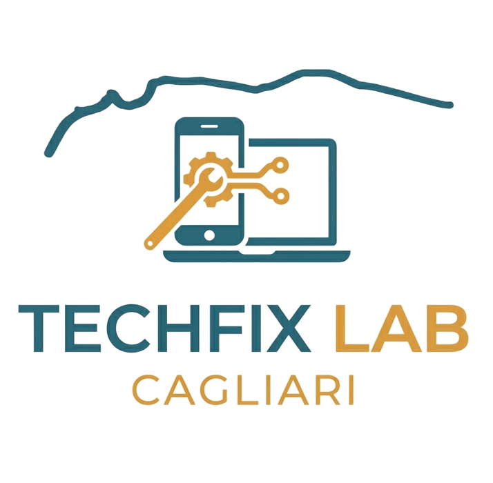

TechFix LabCagliariSmartphone, tablet e computer riparati con la massima cura. Diagnosi trasparente, ricambi di qualità e tempi rapidi: il tuo device torna operativo senza sorprese.
Dalla sostituzione di un display rotto alla bonifica di un PC infettato: ogni intervento parte da una diagnosi onesta, prima di ogni preventivo.
Riparazioni rapide per i dispositivi che usi ogni giorno.
Manutenzione, upgrade e assistenza per PC fissi e portatili.
Non sai cosa non va? Ci penso io: diagnosi gratuita prima di qualsiasi intervento.
TechFix Lab nasce a Cagliari dalla passione per l'elettronica e dalla voglia di offrire un'alternativa onesta ai grandi centri assistenza: niente attese infinite, niente preventivi gonfiati.
Ogni dispositivo che entra in laboratorio viene trattato come se fosse il mio: diagnosi accurata, ricambi selezionati e la massima trasparenza su tempi e costi, dal primo contatto al ritiro.
Compila il form, chiamaci o scrivici su WhatsApp: rispondiamo solitamente entro poche ore.